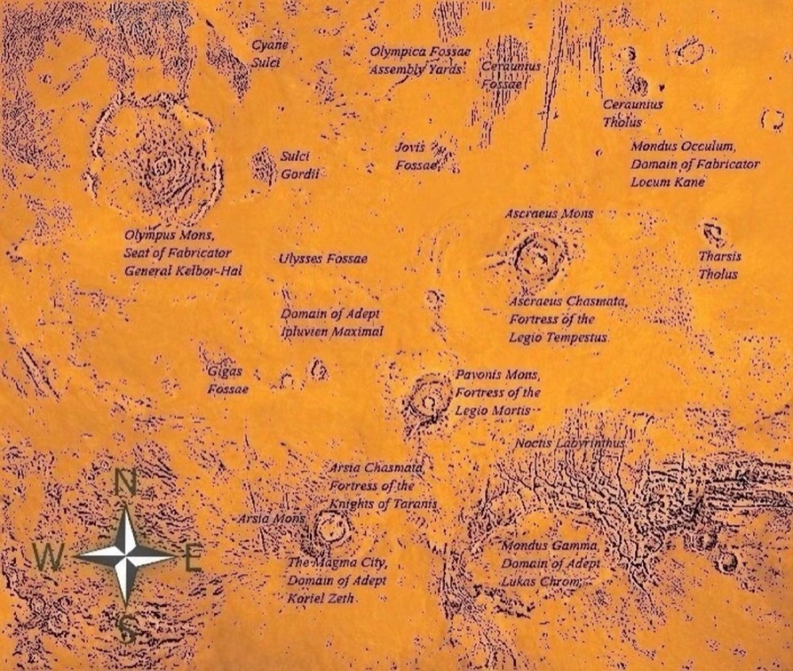

Mars
| Mars | |
|---|---|
| The Red Planet, Forge World Principal | |
 Mars and the Ring of Iron, from a Mechanicus devotional plate Artwork © Games Workshop | |
| System | Sol System, fourth planet |
| Segmentum | Segmentum Solar |
| Classification | Forge world (Forge World Principal); segmentum fortress |
| Ruler | Fabricator-General of Mars, a High Lord of Terra |
| Population | c. 20 billion (Mechanicus census, excluding servitors) |
| Capital | Olympus Mons |
| Tithe grade | Aptus Non (exempt) |
| Moons | Phobos (orbital fortress); Deimos (moved to Saturn) |
| Physical data | |
| Diameter | c. 6,790 km |
| Gravity | 0.38 Terran standard |
| Day | 1.03 Terran days |
| Atmosphere | Thin, toxic; breathable only within the forge-cities |
| Notable features | Ring of Iron; Olympus Mons; Temple of All Knowledge; Noctis Labyrinthus; Tharsis Montes |
Mars, called the Red Planet and in Mechanicus usage the Forge World Principal, is the fourth planet of the Sol System and the homeworld of the Adeptus Mechanicus. It is the first and greatest of the Imperium's forge worlds, the seat of the Fabricator-General, and to the Cult Mechanicus the holiest place in the galaxy. Its surface is covered by forge-cities, refineries and temple-manufactoria, and the shipyards of the Ring of Iron in its orbit build the greater part of the Imperial Navy's capital ships.[1][2]
Mars was colonised and terraformed during the Dark Age of Technology and survived the Age of Strife as an isolated technocracy, the Mechanicum. In c. 739.M30 its rulers recognised the Emperor of Mankind as the Omnissiah, the Machine God made flesh, and bound Mars to Terra by the Treaty of Olympus. The planet armed the Great Crusade, and Imperial doctrine holds that the two heads of the Aquila stand for Terra and Mars. During the Horus Heresy the Fabricator-General Kelbor-Hal sided with Horus, and Mars was torn apart by the Schism of Mars.[3][4]
Since the Heresy Mars has been the centre of the reformed Adeptus Mechanicus, whose Fabricator-General holds a permanent seat among the High Lords of Terra. In the Era Indomitus it supplied the Indomitus Crusade and the Primaris Space Marines of Belisarius Cawl, and its forges now work at a rate not seen since the Great Crusade.[5][6]
Name
[edit]The planet's name is older than the Imperium and is preserved in Terran records from before the Age of Strife. The adepts of the Mechanicus also use the names Forge World Principal, the Red Planet and, in older binaric liturgy, the First Altar. Across the Imperium, many forge worlds were founded and terraformed on the Martian model, and the word "Martian" is used loosely of the Mechanicus as a whole.[2][a]
History
[edit]Colonisation and the Dark Age of Technology
[edit]Mars was one of the first worlds settled by humanity beyond Terra. In the Dark Age of Technology it was terraformed, given a breathable atmosphere and open seas, and became one of the chief centres of human industry and research. Mechanicus charts from this period, preserved in the Librarius Omnis, show green lowlands and a northern ocean.[2]
The Mechanicum's own histories begin in the late years of that age, when the planet's engineers and data-priests, cut off from Terra by war and disaster, organised themselves into a priesthood dedicated to the preservation of knowledge. The doctrines of the Quest for Knowledge and of the Machine God date, in their earliest form, to this time. Imperial and Mechanicus accounts agree that some of the technologies of the age were sealed in vaults beneath the planet's surface, and that some of those vaults were sealed for good reason.[2][3]
Age of Strife
[edit]The warp storms of the Age of Strife isolated Mars from the wider galaxy. The planet's terraformed climate collapsed under the pressure of constant warfare and unrestrained industry. Mechanicum records speak of the revolt of thinking machines, which the Mechanicus calls the rising of the Iron Men, and of wars between rival forges in which whole regions of the planet were rendered uninhabitable. By the end of the age the seas had dried, the atmosphere had thinned and poisoned, and the population had withdrawn into sealed forge-cities.[2]
The Mechanicum emerged from the Age of Strife as the undisputed master of the planet, governed by a Fabricator-General and a parliament of high adepts sitting at Olympus Mons. As the warp storms waned, its fleets travelled outwards to raid for technology and to found colonies of tech-priests. Some of these became the first daughter forge worlds; others were lost.[2]
The Treaty of Olympus
[edit]
When the Emperor had ended the Unification Wars on Terra, he travelled to Mars. The Mechanicum recognised in him the Omnissiah foretold in its doctrine, and in c. 739.M30 the two powers concluded the Treaty of Olympus, called on Terra the Treaty of Mars. Mars kept its own laws, its own priesthood and its faith in the Machine God, and was exempted from the Imperial Truth. In return it placed its forges, its Titan Legions, its Skitarii and its knowledge at the service of the Emperor.[3]
The treaty made Mars an ally of Terra and not its subject. No other world of the Imperium was ever given the same standing, and Imperial jurists have argued over the extent of Martian autonomy ever since.[3]
The Great Crusade
[edit]Mars armed the Great Crusade. The shipyards of the Ring of Iron built the expedition fleets, the forges of Tharsis made the power armour and bolters of the Space Marine Legions, and the Titan Legions marched with the expeditions. Forge masters such as Koriel Zeth of the Magma City and Zagreus Kane of Mondus Occulam became powers in their own right. The Mechanicum calls the period the Great Expansion, since hundreds of lost forge worlds and Knight worlds were rediscovered in it.[2][7]
The priesthood's support was not given without reservation. The Fabricator-General Kelbor-Hal resented the Emperor's restrictions on Martian research, in particular the sealing of certain vaults beneath Olympus Mons, among them the Vaults of Moravec, which the Emperor had judged too dangerous to open.[4]
The Horus Heresy
[edit]
In 005.M31 Horus promised Kelbor-Hal that the Emperor's prohibitions would be lifted, and the Fabricator-General declared for the Warmaster. Kelbor-Hal released a corrupting scrapcode into the planet's noosphere, which drove machines and their operators mad across Mars. The forge-cities fell to fighting one another in the Schism of Mars. Koriel Zeth's Magma City was destroyed; the loyalist Legio Ignatum and Legio Tempestus fought the traitor Legio Mortis across the Tharsis plains; and a force of the Imperial Fists under Sigismund landed to recover what it could from Mondus Occulam before the forge was overrun.[4][2]
By the end of the Schism the traitors held most of the planet. Those who followed Kelbor-Hal became the Dark Mechanicum, and their forges supplied the traitor host in the Siege of Terra. Mars was blockaded by loyalist forces from Terra, and loyalist adepts under Zagreus Kane fought on in the deserts and the deep catacombs.[4]
Imperial records do not agree on the fate of Kelbor-Hal. Some accounts place him at Terra during the Siege, where he claimed credit for the work of Perturabo's engineers against the Imperial Palace; others say that he fled with the traitors. No reliable record of his death survives.[4]
The Scouring and the Age of Rebirth
[edit]After the Siege, loyalist forces retook Mars in the course of the Great Scouring. Zagreus Kane became Fabricator-General, and the Mechanicum was reformed as the Adeptus Mechanicus. Its Fabricator-General was given a permanent seat among the High Lords of Terra, and the priesthood took charge of the maintenance of the Golden Throne, which none but the tech-priests of Mars could understand. The planet's forge-cities were purged, rebuilt and rededicated, a process that Mechanicus records say took more than a century.[2][8]
From the 32nd to the 41st millennium
[edit]Mars was attacked during the War of the Beast in M32, when Ork forces entered the Sol System, and its shipyards worked without pause to replace the fleets lost in that war. In M34 the old rivalry between the forges of the northern and southern hemispheres broke into open war, which ended only when both sides united against a renegade adept, remembered as the Prophet of Cogs, who had bound millions of abandoned war machines to his will. The Moirae Schism of early M35, during the Nova Terra Interregnum, divided the priesthood across the galaxy and took more than two thousand years to suppress.[2][1]
In M39 the Fabricator-General's claim to the treasures of the Culexus Temple brought Mars and Terra close to war in the affair of the Golden Cog, which was resolved by the Officio Assassinorum. In the Macharian Conquests of 392–399.M41, Mars led the forge worlds that supplied the armies of Lord Solar Macharius.[2]
In 998.M41 a squadron of Necron cruisers passed the outer defences of the Sol System, evaded the defence lines at Deimos and Phobos, and attacked the deep mines of Mars before they were destroyed. The Mechanicus then sealed the Noctis Labyrinthus behind an exclusion zone held by an entire Skitarii Legion. The purpose of the raid has never been explained in any record open to the wider Imperium.[2]
The Era Indomitus
[edit]The Great Rift of 999.M41 cut Mars off from many of its daughter worlds. At least seven forge worlds were destroyed in the years that followed and others were lost in the warp storms. Mars contributed Skitarii Legions, maniples of the Legio Cybernetica, Knights of House Taranis and the person of Archmagos Dominus Belisarius Cawl to the Indomitus Crusade of Roboute Guilliman. Cawl's Primaris Space Marines, prepared over ten thousand years in vaults that some sources place beneath the Martian surface, were released at this time.[5][6]
Since the opening of the Rift, Mars has ordered every forge world to raise its output to the limit. Vast fleets have been sent out to strip resources from whole systems, among them the Rust Fields, an asteroid region whose interior has been found to be held by Orks. Mars and its allies have also fought a series of wars against the Necrons over deposits of noctilith, the black stone from which the Cadian Pylons were made. Despite the Rift, the Temple of All Knowledge still receives astropathic reports from forge worlds across the galaxy every day.[5][2]
Geography
[edit]
Mars is a small rocky planet with about two-fifths of Terra's surface gravity. Its natural surface is a desert of iron-red dust and basalt, crossed by canyons and broken by some of the largest volcanoes known in the Imperium. The atmosphere is thin and so heavily polluted that it cannot be breathed outside the sealed forge-cities. Surface temperatures range from far below freezing at night to mild in the equatorial day.[2]
Very little of the natural surface remains visible. Forge-cities, manufactoria, refinery fields, reactor complexes and temple-cities the size of continental plates cover most of the planet, joined by elevated transit tubes and power lines. Between them lie wastes of slag and industrial ruin, some dating to the Age of Strife and still haunted by malfunctioning servitors and abandoned war machines.[2]
Principal regions
[edit]- Olympus Mons, the highest mountain on Mars, is the capital and the site of the largest forge temple in the Imperium. It is the seat of the Fabricator-General and contains the Temple of All Knowledge, whose roof stands about two kilometres high on moving pistons that alter its acoustics for the hymns of the Machine God. Within the temple is the High Altar of Technology, to which every new discovery of the priesthood is dedicated.[2]
- Tharsis, the volcanic upland around Olympus Mons, contains the Tharsis Montes (Arsia Mons, Pavonis Mons and Ascraeus Mons) and many of the oldest forge temples, including Mondus Occulam and Mondus Gamma. Mastery of a Tharsis forge is still among the highest honours of the priesthood.[2]
- Noctis Labyrinthus, the "Labyrinth of the Night", is a maze of canyons between Tharsis and the Valles Marineris. Mechanicus legend says that a being called the Dragon of Mars sleeps beneath it. The region has been closed by an exclusion zone since 998.M41.[2][b]
- The Librarius Omnis, a continent-wide subterranean archive, where the explorer Arkhan Land recovered the patterns for the Land Raider and for anti-gravitic plating at the dawn of the Imperium.[2]
- The fortress temples of the Titan Legions and of Knight House Taranis, the Navis Imperialis assembly yards, and the great space ports of Esperanos and Deus Manus.[2]
Orbit and moons
[edit]The Ring of Iron is a band of thousands of orbital shipyards, docks and foundries that circles Mars above the equator. Most of the expedition fleets of the Great Crusade were built there, and it still produces the greater part of the Imperial Navy's capital ships. Elements of Battlefleet Solar are based in its docks.[1]
Mars has two moons. Phobos carries a line of orbital defences. Deimos has been absent from Mars' orbit for many thousands of years. It was moved to the orbit of Saturn and serves as a forge world for the Grey Knights of Titan; how and when it was moved is not recorded in any open archive.[2]
Government
[edit]Mars is a theocracy governed by the Fabricator-General, the head of the Adeptus Mechanicus. The Fabricator-General rules from Olympus Mons with the counsel of the high adepts and archmagi of the planet's forges, and holds a permanent seat among the High Lords of Terra. Under the Treaty of Olympus, Mars is not subject to Imperial governors, Imperial law outside the treaty's terms, or the tithe, and its rulers have always guarded those privileges. Each forge on the planet is ruled by its own forge master, and rivalries between forges, and between the northern and southern hemispheres, are an old feature of Martian politics.[3][1]
| Fabricator-General | Period | Notes |
|---|---|---|
| Kelbor-Hal | Late M30 – 005.M31 | Signatory of the Treaty of Olympus; declared for Horus; fate unknown |
| Zagreus Kane | M31 | Leader of the loyalist adepts during the Schism; first Fabricator-General of the Adeptus Mechanicus |
| Kubik | M32 | Held office during the War of the Beast |
Society
[edit]
Martian society is strictly stratified. At its base are the unaugmented citizens, who make up most of the human population and labour in vast numbers at sorting scrap, tending hydroponics, breaking ore and stoking furnaces. Above them are the Skitarii, whose service brings the first battle-grade augmetics and a chance of ordination, then the tech-priests, magi and archmagi of the priesthood proper. Servitors, built from criminals and the condemned, perform much of the planet's mechanical work and are not counted among its people.[2]
Almost every Martian carries electoos, circuits implanted beneath the skin through which the planet's masters can monitor them and, in time of war, drive them to fight. Visitors describe Martian citizens as burly, shaven-headed and dour. Binaric cant is the language of the priesthood, though Low Gothic is spoken among the workers.[2]
Travel to Mars is restricted for those who are not members of the Mechanicus, and pilgrims of the Cult Mechanicus travel there from every forge world. To its adherents, Mars is the holiest of worlds: the place where the Machine God first spoke to humanity, where the Omnissiah walked, and where every discovery is offered on the High Altar. The priesthood's archives on the planet are believed to rival those of the Adeptus Terra, though they are disordered, and a crystal of genetor-grade data may be found inside a manual for military locomotives.[2][9]
Military
[edit]Mars is among the most heavily defended worlds of the Imperium. Its forces include Skitarii Legions, Titan Legions, the war robots of the Legio Cybernetica and Knight House Taranis, whose fortress temple stands on the planet. The Titan Legions historically associated with Mars include the Legio Ignatum and the Legio Tempestus; the traitor Legio Mortis was also raised there before the Heresy. The planet's orbital defences, the Ring of Iron and the elements of Battlefleet Solar stationed there make it a segmentum fortress in its own right.[2][1]
Legacy
[edit]Mars is the model for every other forge world, and many were deliberately terraformed and built to resemble it. The double-headed Aquila is taught in Mechanicus schola as a symbol of the union of Terra and Mars, and the Treaty of Olympus remains the legal foundation of the priesthood's place in the Imperium. The Schism of Mars is remembered by the Mechanicus as its darkest hour, and the Dark Mechanicum that arose from it is still hunted across the galaxy.[3][4]
Timeline
[edit]| Date | Event |
|---|---|
| Age of Technology | Mars is fully terraformed, with an atmosphere and ecosystems like those of ancient Terra. |
| Age of Strife | Constant warfare undoes the terraforming, and Mars's cities fall into ruin. |
| ca. M25–M30 | Mars overcomes strife and unites beneath the Cult Mechanicus and the Mechanicum government.[c] |
| Late M30 | The Treaty of Olympus binds the Mechanicum to the Emperor, and Mars recognises him as the Omnissiah. |
| 798.M30 | The Great Crusade begins, and Mars builds the exploratory and expeditionary fleets from the Ring of Iron. |
| M31–M32 | The Age of Rebirth reforges the Mechanicum as the Adeptus Mechanicus; the Fabricator-General of Mars becomes a High Lord of Terra. |
| 005–014.M31 | Forge worlds are drawn into the Horus Heresy; the Mechanicum is split during the Schism of Mars. |
| 979.M34 | The North-South conflict on Mars: the Tech-priests of the north and south go to war. |
| M35 | The Moirae Schism in the Nova Terra Interregnum; the forge world of Moirae is destroyed by Exterminatus. |
| 392–399.M41 | Mars sends armies to the Macharian Crusade of Lord Commander Solar Macharius. |
| 998.M41 | Necron starships briefly land on Mars for reasons no record explains. |
| Early M42 | Mars remains the seat of the Fabricator-General and the Adeptus Mechanicus, its forges still producing most of the Imperium's ships. |
See also
[edit]
Notes
[edit]- ^ Mechanicus scholars distinguish between "Martian", meaning born on Mars or ordained in one of its forges, and "Mechanicus", meaning any member of the priesthood. Outside the priesthood the two are generally treated as the same.
- ^ Some sealed Mechanicus and Inquisitorial sources identify the Dragon of Mars with the C'tan called the Void Dragon, and state that the Emperor imprisoned it there before the Age of Strife. The Adeptus Mechanicus neither confirms nor denies these accounts, and the matter is [data expunged].
- ^ Estimated; no record gives an exact year.
References
[edit]- ^ a b c d e Annandale, David. The Last Wall (novel). Black Library, Ch. 9. Codex: Adeptus Mechanicus (8th Edition), pp. 6, 8-10, 12, 14-23, 29-35, 39, 41, 45, 48-49, 52, 54, 61, 72, 74, 82, 95, 98-99, 100-101. Games Workshop.
- ^ a b c d e f g h i j k l m n o p q r s t u v w x y Warhammer 40,000: Rulebook (8th Edition), pp. 25, 27, 33, 40-42, 48, 50, 60, 73-74, 277-279. Games Workshop. McNeill, Graham. Mechanicum (novel). Black Library.
- ^ a b c d e f Annandale, David. The Hunt for Vulkan (Book Seven) (novel). Black Library. Codex: Adeptus Mechanicus - Skitarii (7th Edition), pp. 22-27, 55-64. Games Workshop.
- ^ a b c d e f Codex: Adeptus Mechanicus - Cult Mechanicus (7th Edition), pp. 6, 8-9, 25-26, 36-38, 52, 60-66, 68, 70. Games Workshop. Codex: Necrons (3rd Edition), pg. 11. Games Workshop.
- ^ a b c Warhammer 40,000: Rulebook (5th Edition). Games Workshop. Codex Imperialis (2nd Edition), pg. 42. Games Workshop.
- ^ a b Bligh, Alan. The Horus Heresy - Book One: Betrayal (Forge World Series). Black Library, pg. 16. Titan Legions (2nd Edition), pg. 10-13. Games Workshop.
- ^ Heralds of the Siege (Anthology) edited by Nick Kyme and Laurie Goulding, "Myriad" by Rob Sanders. Battlefleet Gothic - 2002 Annual, pp. 10-11.
- ^ Cult Mechanicus Painting Guide - Crusaders of the Machine God (Painting Guide), pp. 4-17. Horus Heresy: Collected Visions, pg. 369.
- ^ Imperial Armour Volume One - Imperial Guard & Imperial Navy, pp. 81, 160. Skitarii Painting Guide - Legions of the Omnissiah (2015), pp. 3-19.